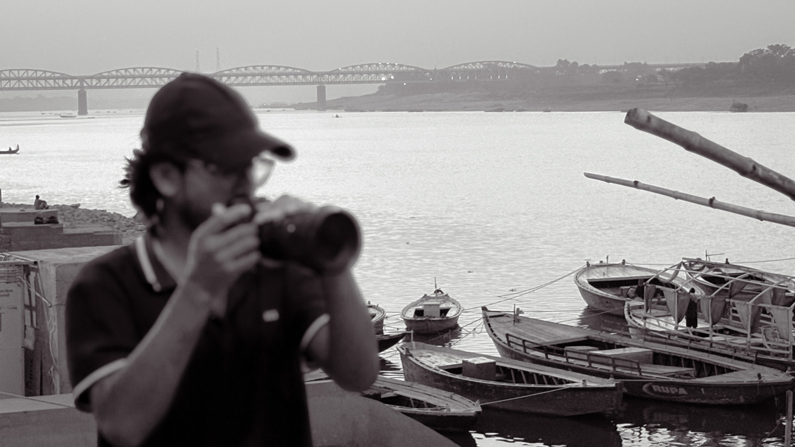
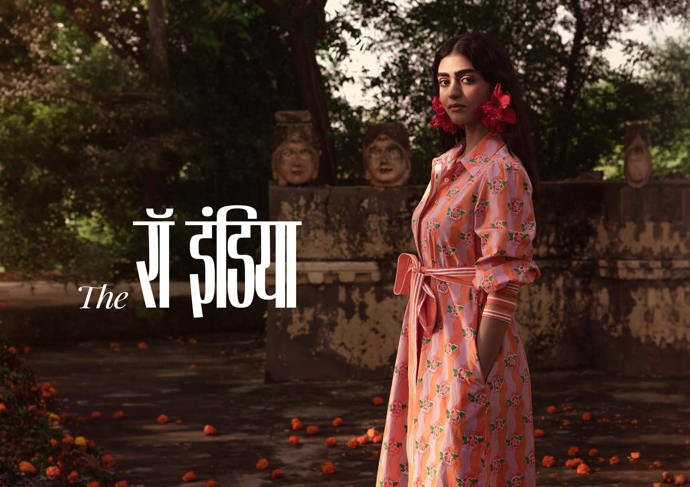
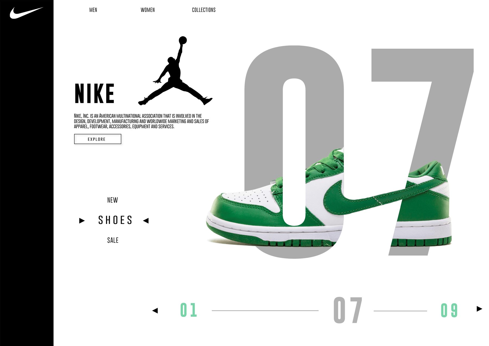
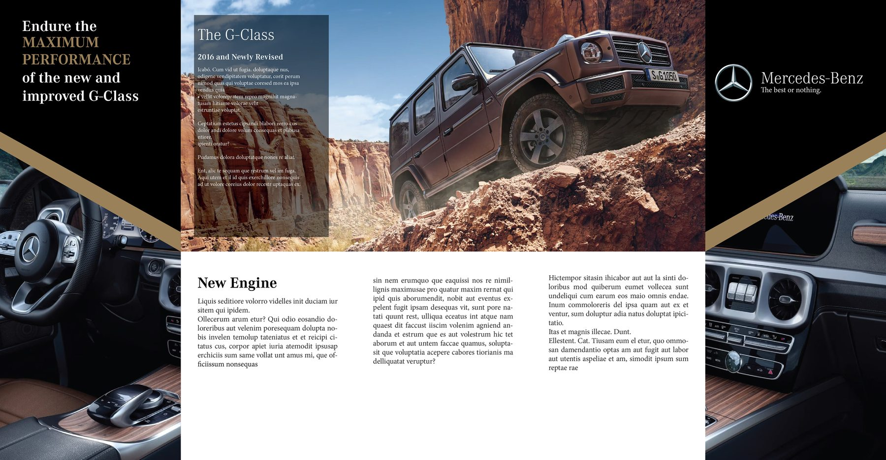
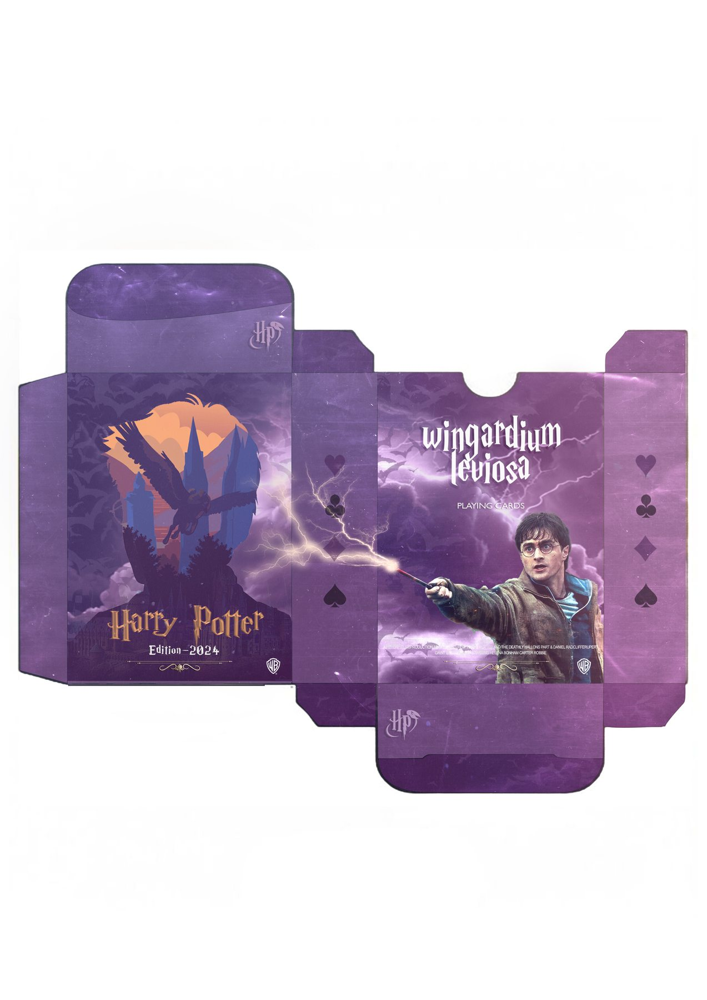
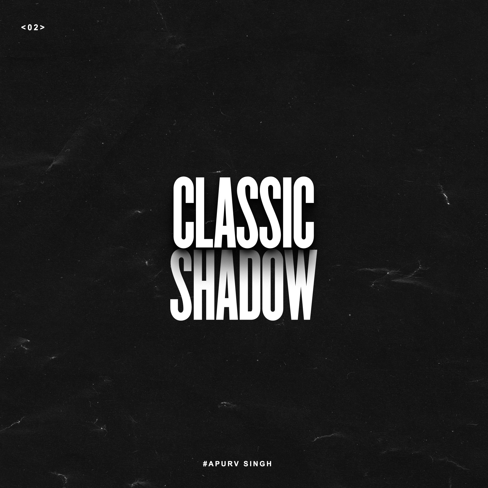

INDEPENDENT PHOTOGRAPHER · JAIPUR, INDIA
Ideas into
visual stories.
Graphic design and photography shaped by curiosity, culture, and the details in between.
EXPLORE SELECTED WORK ↓
AS / IMAGE 01
FIG. 01 — INTRODUCTION
01 / SELECTED WORKTwo ways of
Two ways of
seeing.
A selection of visual identities, printed matter, and photographs. More work lives inside each collection.
02 / GRAPHIC DESIGNIDENTITY · PRINT · OBJECT
Design, with
intention.
Selected projects across identity, editorial design, packaging, and print.

01↗Branding
Visual identity & systems · 28 images
02↗Catalogue
Editorial & product stories · 4 images
03↗Brochure
Print & information design · 2 images
04↗Packaging
Form, material & shelf presence · 4 images
05↗Posters
Poster design & visual communication · 8 images03 / PHOTOGRAPHYPEOPLE · CULTURE · EVERYDAY LIFE
Looking a little
closer.
Frames that hold a mood, a gesture, or a fleeting moment.
Curious by nature.
Visual by instinct.
I’m Apurv Singh, a graphic designer and photographer interested in how images, type, and everyday culture shape the way we see the world.
This space brings together selected design work and photographs. It’s an evolving record of things I make, notice, and want to understand better.
LET’S MAKE SOMETHING ↗Have something
in mind?
For collaborations, commissions, or a good conversation.
EMAIL FOR COLLABORATIONS ↗